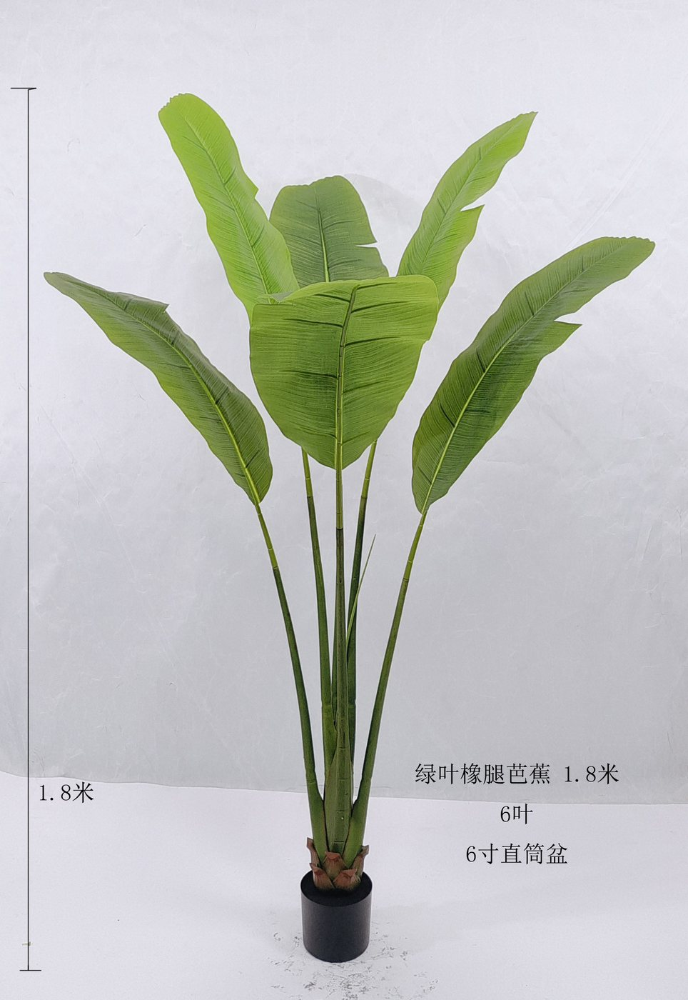

Palms & Tropicals
Green-Leaf Elephant Foot Banana
Green-Leaf Elephant Foot Banana is a tropical focal point suitable for hotel lobbies, resorts, and large indoor planters. Available in heights from 180–250 cm. Photos show the actual product; exact dimensions, packing, MOQ, lead time and price are confirmed by the seller on inquiry.
Opens your email application; sending happens there.
Product information
Green-Leaf Elephant Foot Banana is a tropical focal point suitable for hotel lobbies, resorts, and large indoor planters. Available in heights from 180–250 cm. Photos show the actual product; exact dimensions, packing, MOQ, lead time and price are confirmed by the seller on inquiry.
Specifications
| Heights (from photos) | 180–250 cm |
|---|---|
| Product code | LC-N109 |